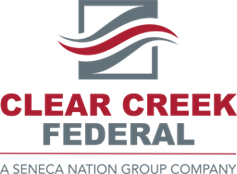
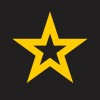

$ cat summary.txt
Hybrid Engineer supporting the evolution of IT environments across virtualization, cloud, and physical data centers. Currently focused on modern DevOps practices including GitOps (FluxCD), and container orchestration (Kubernetes).
$ ls projects/
$ systemctl status experience
-

Hybrid Solutions Engineer Clear Creek FederalDetails
- Administering and maintaining up to 14 on-premises VMWare virtual infrastructure clusters comprised of 350+ hosts on the Dell VXRail and Dell Powerflex platforms across multiple US data centers
- Collaboration with vendors to provide technical, government-approved solutions in accordance with customer requirements
- Contribute prior cloud expertise to support the future implementation of a hybrid environment
- Provided insight to implement Remote Desktop Services (RDS) for the team to allow for multiple remote desktop sessions
- Initial testing of Terraform implementation as an infrastructure as code (IaC) tool to improve operation team's VM deployment times
-
Cloud Engineer Great Hills Solutions
Details
- Administration of multiple Microsoft Azure federal enterprise cloud environments totaling of up to 10,000 users
- Managed customer incidents and requests through ServiceNow to ensure efficient resolution and service delivery
- Managed role-based access control (RBAC), network security groups (NSG), and Azure Entra (formally known as Azure Active Directory AAD) across over 60 Microsoft Azure subscriptions to ensure secure cloud environments
- Directed and leveraged pipelines in Azure DevOps for continuous integration and continuous delivery (CI/CD)
- Participated in meetings with customers to deliver customized services aligned with their specific requirements
- Performance of scheduled maintenance for tasks, such as networking updates and CIDR range adjustments, within customer subscriptions
- Deployed and maintained Azure Virtual Desktop environments utilizing a Blue/Green strategy to provide secure and scalable virtualized desktop experiences for end-users
- Developed comprehensive documentation and standard operating procedures (SOPs) to enhance operational efficiency, ensure consistency, and support compliance within standards
-
Cloud Engineer DIGITALSPEC, LLC.
Details
- Held the same position and responsibilities as above prior to contractual changeover
-
Level 2 Enterprise Operations Engineer DIGITALSPEC, LLC.
Details
- Responsible for over 5,000 physical devices in one data center, and a team of up to 4 other datacenter engineers
- Virtual server management across three different US data centers across the US, and assistance of managing virtual infrastructure at US embassies around the globe
- Oversight of Virtual Machines (VMs) within a VMWare environment
- Executed rack, stack, and structured cabling for enterprise hardware deployments and infrastructure expansion
- Coordinated with teams for scheduled physical device cutovers and emergency break/fixes
- Performed physical layer (Layer 1) troubleshooting to diagnose and resolve connectivity and hardware issues
-

LAN Manager/Specialist US ArmyDetails
- Served in two roles above assigned rank (E7/O3 equivalent), supporting battalion-level operations and improving communication flow between leadership and subordinate units
- Provided Tier 1/2 technical support (hardware/software), including troubleshooting, data backup, and initial diagnostics for 100+ users across four companies
- Led large-scale OS migration projects, upgrading ~750 systems from Windows XP to Windows 7 and ~250 systems from Windows 7 to Windows 10
- Supervised, trained, and delegated tasks to teams of up to 9 personnel, ensuring accountability and operational execution
- Managed structured network cabling to maintain reliable connectivity and minimize downtime